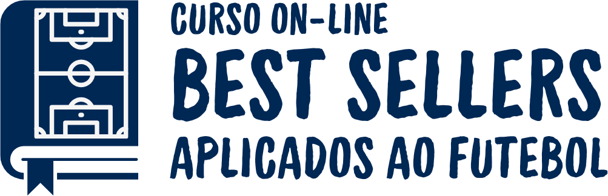

Aprenda com a sabedoria dos maiores Best Sellers do mundo, conectada à prática do treinador
Uma ponte direta entre a sabedoria dos maiores autores do planeta e as demandas diárias da sua carreira.
Muitas vezes, conceitos complexos de liderança e desenvolvimento pessoal parecem distantes do ambiente do futebol. O objetivo do Gabriel Bussinger é eliminar essa barreira: extrair os insights mais valiosos de obras consagradas mundialmente e conectá-los diretamente às situações reais vivenciadas por treinadores de futebol.
Metodologia
Uma ponte direta entre a sabedoria dos maiores autores do planeta e as demandas diárias da sua carreira.
Seleção rigorosa de livros que moldaram grandes líderes globalmente.
Cada conceito é filtrado para responder às dores, decisões e desafios específicos do treinador.
Aulas focadas na evolução do mindset, desenvolvimento de novos hábitos e expansão de competências de gestão.
Benefícios dos Best Sellers
Desenvolvimento integral focado na sua evolução contínua como profissional e indivíduo.
- Remodelação do Mindset do Treinador: Atualização das suas rotinas mentais e de tomada de decisão sob pressão.
- Evolução em Liderança e Comunicação: Absorção de princípios universais para gerir elencos, comissões e ambientes de alta exigência.
- Incentivo à Leitura Estruturada: Construção do hábito de estudo de forma guiada, objetiva e otimizada para quem tem rotina intensa.
- Acesso a Novas Competências: Desbloqueio de habilidades de gestão e inteligência emocional até então pouco exploradas na formação tradicional de treinadores.
Best Sellers Disponíveis
Comece pelo Porquê
Com Gabriel Bussinger · baseado na obra de Simon SinekPor que você faz o que você faz? A resposta a essa pergunta é o que separa treinadores que apenas comandam exercícios daqueles que realmente inspiram e mobilizam suas equipes. Neste curso, Gabriel Bussinger destrincha o Círculo Dourado de Simon Sinek e mostra, com exemplos reais do futebol e do esporte mundial, como vender propósito — não apenas métodos.
- ✓ O Círculo Dourado: por que, como e o quê — e por que essa ordem muda tudo
- ✓ Como Phil Jackson mobilizou o Chicago Bulls pelo propósito em "The Last Dance"
- ✓ A filosofia Ubuntu de Doc Rivers aplicada à liderança de equipes
- ✓ Por que seu atleta só entende o "como" quando você comunica o "porquê"
- ✓ Ferramentas práticas para vender propósito, não apenas exercícios e métodos
Perguntas Frequentes
Preciso ter lido o livro antes de fazer o curso?
Não. O curso já traduz os principais conceitos da obra de forma direta e aplicada ao futebol — não é necessário ter lido o livro previamente.
Por quanto tempo tenho acesso ao conteúdo?
O acesso é válido conforme descrito na oferta no momento da compra. Consulte a página de checkout para os detalhes atualizados.
O curso é ao vivo ou gravado?
É um curso 100% gravado, para você assistir no seu ritmo, quando e onde quiser.
Serve para treinadores de qualquer categoria?
Sim. Os conceitos são aplicáveis a treinadores de base, profissional e demais profissionais do futebol que lideram pessoas no dia a dia.
Como recebo acesso após a compra?
Assim que a compra é aprovada, você recebe por e-mail o acesso à plataforma com o conteúdo do curso.